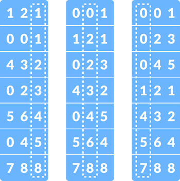
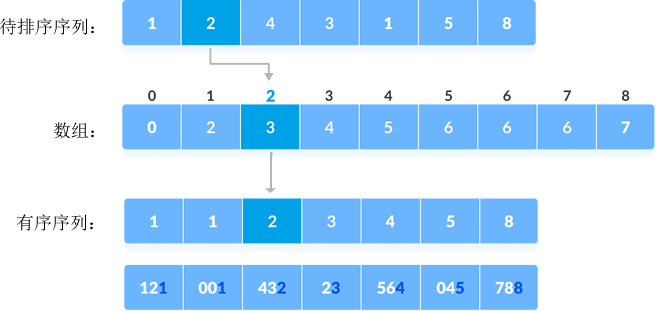

首页 > 编程笔记
基数排序算法
在学会计数排序算法的基础上，本节我们再学习一种排序算法，称为基数排序算法。
基数排序算法适用于对多个整数或者多个字符串进行升序或降序排序，例如：
对于待排序的整数序列，依次比较各个整数的个位数、十位数、百位数......，数位不够的用 0 表示；对于待排序的字符串序列，依次比较各个字符串的第一个字符、第二个字符、第三个字符......，位数不够的用 NULL 表示。
举个例子，使用基数排序算法对 {121, 432, 564, 23, 1, 45, 788} 进行升序排序，需要经历下图所示的三个过程：
依次比较各个元素中的个位数字、十位数字和百位数字，每次根据比较结果对所有元素进行升序排序，最终就可以得到一个升序序列。
仍以对 {121, 432, 564, 23, 1, 45, 788} 进行升序排序为例，基数排序算法的具体实现过程如下：
1) 找到序列中的最大值（如果是字符串序列，找序列中最长的字符串），记录它的位数。通过观察不难判断，整个序列中的最大值为 788，它由 3 个数字组成。这就意味着，算法中需要依次根据各元素的个位数、十位数和百位数对所有元素进行排序。
2) 找到序列中所有元素的个位数，采用计数排序算法对它们进行排序，如下图所示：
数组中记录的是各个元素在有序序列中的位置，以元素 2 为例，数组中存储的值是 3，表示它作为有序序列中的第 3 个元素。由待排序序列推导出数组的具体过程，大家可以阅读《计数排序算法》一节。
根据个位数的大小关系，{121, 432, 564, 23, 1, 45, 788} 进行了重新排序，得到的新序列为 {121, 1, 432, 23, 564, 45, 788}。
3) 找到 {121, 1, 432, 23, 564, 45, 788} 中所有元素的十位数，以同样的方式进行排序，得到的新序列为 {1, 121,. 23, 432, 45, 564, 788}。
4) 找到 {1, 121, 23, 432, 45, 564, 788} 中所有元素的百位数，继续以同样的方法进行排序，得到的新序列为 {1, 23, 45, 121, 432, 564, 788}。
经过以上几个步骤，最终完成了对 {121, 432, 564, 23, 1, 45, 788} 序列的升序排序。
结合伪代码，如下是采用基数排序算法对 {121, 432, 564, 23, 1, 45, 788} 进行升序排序的 C 语言程序：
如下是采用基数排序算法对 {121, 432, 564, 23, 1, 45, 788} 进行升序排序的 Java 程序：
如下是采用基数排序算法对 {121, 432, 564, 23, 1, 45, 788} 进行升序排序的 Python 程序：
以上程序的输出结果均为：
基数排序算法适用于对多个整数或者多个字符串进行升序或降序排序，例如：
121, 432, 564, 23, 1, 45, 788
"zhangsan"、"lisi"、"wangwu"
对于待排序的整数序列，依次比较各个整数的个位数、十位数、百位数......，数位不够的用 0 表示；对于待排序的字符串序列，依次比较各个字符串的第一个字符、第二个字符、第三个字符......，位数不够的用 NULL 表示。
举个例子，使用基数排序算法对 {121, 432, 564, 23, 1, 45, 788} 进行升序排序，需要经历下图所示的三个过程：

图 1 基数排序算法的实现过程
图 1 基数排序算法的实现过程
依次比较各个元素中的个位数字、十位数字和百位数字，每次根据比较结果对所有元素进行升序排序，最终就可以得到一个升序序列。
基数排序算法的实现细节
通过前面的实例，相信大家已经了解了基数排序算法的实现思路。接下来，我们给大家讲解实现基数排序算法的具体细节。仍以对 {121, 432, 564, 23, 1, 45, 788} 进行升序排序为例，基数排序算法的具体实现过程如下：
1) 找到序列中的最大值（如果是字符串序列，找序列中最长的字符串），记录它的位数。通过观察不难判断，整个序列中的最大值为 788，它由 3 个数字组成。这就意味着，算法中需要依次根据各元素的个位数、十位数和百位数对所有元素进行排序。
2) 找到序列中所有元素的个位数，采用计数排序算法对它们进行排序，如下图所示：

图 2 根据个位数对序列进行升序排序
图 2 根据个位数对序列进行升序排序
数组中记录的是各个元素在有序序列中的位置，以元素 2 为例，数组中存储的值是 3，表示它作为有序序列中的第 3 个元素。由待排序序列推导出数组的具体过程，大家可以阅读《计数排序算法》一节。
根据个位数的大小关系，{121, 432, 564, 23, 1, 45, 788} 进行了重新排序，得到的新序列为 {121, 1, 432, 23, 564, 45, 788}。
3) 找到 {121, 1, 432, 23, 564, 45, 788} 中所有元素的十位数，以同样的方式进行排序，得到的新序列为 {1, 121,. 23, 432, 45, 564, 788}。
4) 找到 {1, 121, 23, 432, 45, 564, 788} 中所有元素的百位数，继续以同样的方法进行排序，得到的新序列为 {1, 23, 45, 121, 432, 564, 788}。
经过以上几个步骤，最终完成了对 {121, 432, 564, 23, 1, 45, 788} 序列的升序排序。
基数排序算法的代码实现
如下是实现基数排序算法的伪代码：
//基数排序算法，array 为待排序序列
radixSort(array):
max = getMax(array) // 查找 array 序列中的最大值
place <- 1 // 默认从个位开始排序
while max/place > 0 : // 将最大值的位数作为循环次数
countingSort(array, place) // 调用计数排序算法，根据所选数位对各个元素进行排序
place = place * 10
//计数排序算法，array 为待排序序列，place 指排序所依照的数位
countingSort(array, place)
size <- len(array) // 获取 array 序列中的元素个数
// 根据 place，找到相应数位值最大的元素
max <- (array[0] / place) % 10
for i <- 1 to size:
if (array[i] / place) % 10 > max：
max <- array[i]
// 创建 count[max+1]，统计各个元素的出现次数
for j <- 0 to size
count[(array[i] / place) % 10] <- count[(array[i] / place) % 10] + 1
// 对 count[max+1] 存储的元素做累加操作
for i <- 1 to max
count[i] <- count[i] + count[i - 1];
// 根据 count[max+1] 中的累加值，找到各个元素排序后的具体位置
for j <- size down to 0
output[count[(array[i] / place) % 10] - 1] <- array[i];
// 确定一个元素的位置后，count[max+1] 中相应位置的数值要减 1
count[(array[i] / place) % 10] <- count[(array[i] / place) % 10] - 1
return output[size]
结合伪代码，如下是采用基数排序算法对 {121, 432, 564, 23, 1, 45, 788} 进行升序排序的 C 语言程序：
#include <stdio.h>
#define N 7
#define MAX 100 //限制各个元素各数位上的值不能超过 100
//计数排序算法，place 表示以指定数位为准，对序列中的元素进行排序
void countingSort(int array[], int place) {
int i, output[N];
//初始化一个数组,继续各个元素的出现次数
int count[MAX] = { 0 };
//假设第一个元素指定数位上的值最大
int max = (array[0] / place) % 10;
//找到真正数位上值最大的元素
for (i = 1; i < N; i++) {
if (((array[i] / place) % 10) > max)
max = array[i];
}
//统计各个元素出现的次数
for (i = 0; i < N; i++)
count[(array[i] / place) % 10]++;
//累加 count 数组中的出现次数
for (i = 1; i < 10; i++)
count[i] += count[i - 1];
//根据 count 数组中的信息，找到各个元素排序后所在位置，存储在 output 数组中
for (i = N - 1; i >= 0; i--) {
output[count[(array[i] / place) % 10] - 1] = array[i];
count[(array[i] / place) % 10]--;
}
//将 output 数组中的数据原封不动地拷贝到 array 数组中
for (i = 0; i < N; i++)
array[i] = output[i];
}
//找到整个序列中的最大值
int getMax(int array[]) {
int i, max = array[0];
for (i = 1; i < N; i++)
if (array[i] > max)
max = array[i];
return max;
}
//基数排序算法
void radixSort(int array[]) {
//找到序列中的最大值
int place, max = getMax(array);
//根据最大值具有的位数，从低位依次调用计数排序算法
for (place = 1; max / place > 0; place *= 10)
countingSort(array, place);
}
//输出 array 数组中的数据
void printArray(int array[]) {
int i;
for (i = 0; i < N; ++i) {
printf("%d ", array[i]);
}
}
int main() {
int array[N] = { 121, 432, 564, 23, 1, 45, 788 };
radixSort(array);
printArray(array);
}
如下是采用基数排序算法对 {121, 432, 564, 23, 1, 45, 788} 进行升序排序的 Java 程序：
public class Demo {
// 计数排序算法，place 表示以指定数位为准，对序列中的元素进行排序
public static void countingSort(int array[], int place) {
int size = array.length;
int[] output = new int[size];
// 假设第一个元素指定数位上的值最大
int max = (array[0] / place) % 10;
// 找到真正数位上值最大的元素
for (int i = 1; i < size; i++) {
if (((array[i] / place) % 10) > max)
max = array[i];
}
// 创建并初始化 count 数组
int[] count = new int[max + 1];
for (int i = 0; i < max; ++i)
count[i] = 0;
// 统计各个元素出现的次数
for (int i = 0; i < size; i++)
count[(array[i] / place) % 10]++;
// 累加 count 数组中的出现次数
for (int i = 1; i < 10; i++)
count[i] += count[i - 1];
// 根据 count 数组中的信息，找到各个元素排序后所在位置，存储在 output 数组中
for (int i = size - 1; i >= 0; i--) {
output[count[(array[i] / place) % 10] - 1] = array[i];
count[(array[i] / place) % 10]--;
}
// 将 output 数组中的数据原封不动地拷贝到 array 数组中
for (int i = 0; i < size; i++)
array[i] = output[i];
}
// 找到整个序列中的最大值
public static int getMax(int array[]) {
int size = array.length;
int max = array[0];
for (int i = 1; i < size; i++)
if (array[i] > max)
max = array[i];
return max;
}
// 基数排序算法
public static void radixSort(int array[]) {
// 找到序列中的最大值
int max = getMax(array);
// 根据最大值具有的位数，从低位依次调用计数排序算法
for (int place = 1; max / place > 0; place *= 10)
countingSort(array, place);
}
public static void main(String args[]) {
int[] data = { 121, 432, 564, 23, 1, 45, 788 };
radixSort(data);
System.out.println(Arrays.toString(data));
}
}
如下是采用基数排序算法对 {121, 432, 564, 23, 1, 45, 788} 进行升序排序的 Python 程序：
array = [121, 432, 564, 23, 1, 45, 788]
#计数排序算法，place 表示以指定数位为准，对序列中的元素进行排序
def countingSort(array, place):
size = len(array)
output = [0] * size
# 找到真正数位上值最大的元素
max_element = int(array[0] // place) % 10
for i in range(1,size):
if (array[i] // place) % 10 > max_element:
max_element = array[i]
#创建一个列表，统计各个元素的出现次数
count = [0] * (max_element+1)
for i in range(0, size):
count[(array[i]//place) % 10] += 1
#累加 count 数组中的出现次数
for i in range(1, max_element):
count[i] += count[i - 1]
#根据 count 数组中的信息，找到各个元素排序后所在位置，存储在 output 数组中
i = size - 1
while i >= 0:
output[count[(array[i]//place) % 10] - 1] = array[i]
count[(array[i]//place) % 10] -= 1
i -= 1
#将 output 数组中的数据原封不动地拷贝到 array 数组中
for i in range(0, size):
array[i] = output[i]
# 基数排序算法
def radixSort(array):
# 找到序列中的最大值
max_element = max(array)
# 根据最大值具有的位数，从低位依次调用计数排序算法
place = 1
while max_element//place :
countingSort(array, place)
place *= 10
radixSort(array)
print(array)
以上程序的输出结果均为：
1 23 45 121 432 564 788
关注公众号「站长严长生」，在手机上阅读所有教程，随时随地都能学习。内含一款搜索神器，免费下载全网书籍和视频。

微信扫码关注公众号